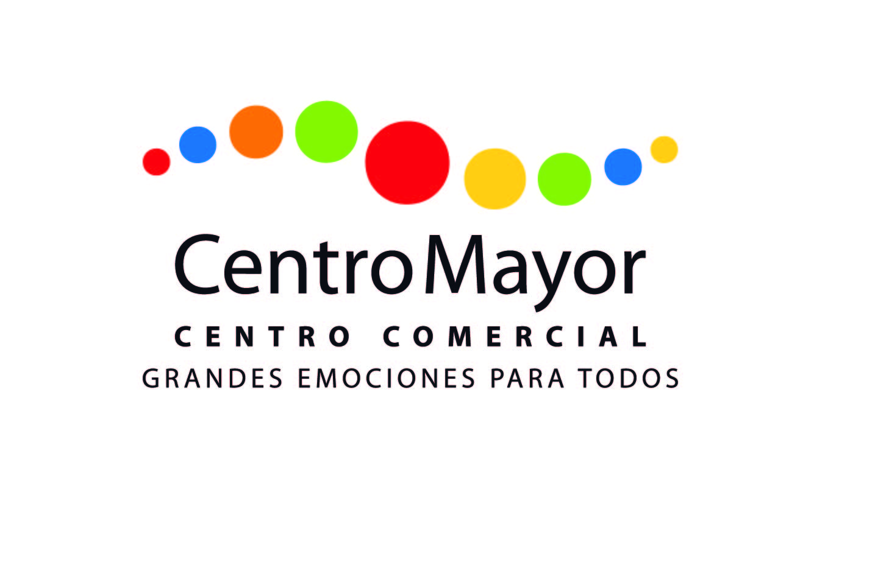

Centro Mayor
En Centro Mayor, hemos establecido una relación sólida al ofrecer servicios de alta calidad en el mantenimiento de productos metálicos, respaldando la integridad de sus instalaciones y equipos.

Don Maiz
En Don Maíz, nos enorgullece ser su elección para servicios de mantenimiento y reparación de productos metálicos, contribuyendo al rendimiento y durabilidad de sus instalaciones.